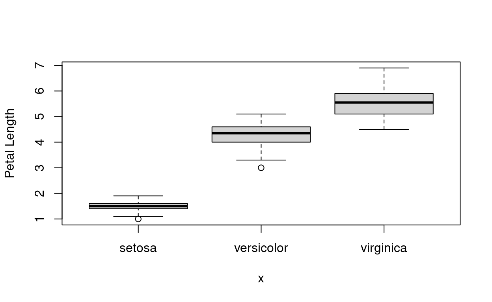
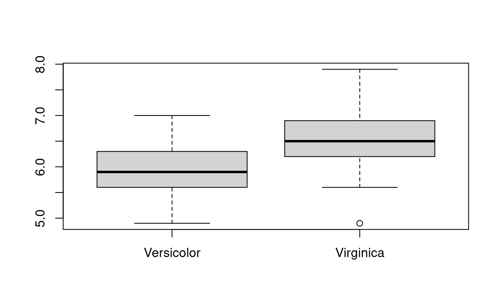

Hello data analysis
Introduction
In this tutorial we consider data introduced by Ronald Fisher in his 1936 paper The use of multiple measurements in taxonomic problems, otherwise known as Iris.
The learning objective is to develop experience of data analysis using some R commands for summary statistics, plots, correlation and group comparisons.
Load data
Inbuilt data in R
The data we use in this tutorial contains three plant species (setosa, virginica, versicolor) and four features measured for each sample. These quantify the morphologic variation of the iris flower in its three species, all measurements given in centimeters.
This dataset is inbuilt into R. It can be accessed via:
## load iris, a dataset inbuilt into R
data(iris)The first thing I do when loading data is to check it looks as expected. The command head() shows the first few rows.
## have a look at the data: head() prints out the first few rows
head(iris)Saving and loading your own data
When you have your own dataset you will need to load it into R in a different way.
A common method is to save data as a commar separated file (.csv). This is a text file that separates out columns using a commar (,). You can do this in many programs, including Microsoft Excel, Libreoffice or just a text editor.
Data can be saved in R as a csv file using write.csv(). We next demonstrate how to save the data from R to a CSV file, in this case the iris data:
write.csv(file="iris-out.csv", iris, row.names=FALSE)This created a CSV file called iris-out.csv.
How can we load a CSV file? One way is through read.csv(). For example, to load the iris data into an object we call iris2 use:
iris2 = read.csv("iris-out.csv")There are now two identical datasets in R: iris and iris2.
Now your turn: write the command to display the first few rows on ‘iris2’ that we just loadedhead(__) Hint: replace __ with iris2
Summary statistics
summary() function
In the first tutorial you were introduced to the summary() function. When run on a data frame like the iris data it gives summary statistics for each column, including min, max, mean, median and upper and lower quartiles:
summary(iris)## Sepal.Length Sepal.Width Petal.Length Petal.Width
## Min. :4.300 Min. :2.000 Min. :1.000 Min. :0.100
## 1st Qu.:5.100 1st Qu.:2.800 1st Qu.:1.600 1st Qu.:0.300
## Median :5.800 Median :3.000 Median :4.350 Median :1.300
## Mean :5.843 Mean :3.057 Mean :3.758 Mean :1.199
## 3rd Qu.:6.400 3rd Qu.:3.300 3rd Qu.:5.100 3rd Qu.:1.800
## Max. :7.900 Max. :4.400 Max. :6.900 Max. :2.500
## Species
## setosa :50
## versicolor:50
## virginica :50
##
##
## apply(): statistics by row or column of data
A more general way to get statistics by column is to use apply(__, 2, __). For example, let us calculate the mean to the first 4 columns of iris
apply(iris[,1:4], 2, mean) #mean first 4 cols## Sepal.Length Sepal.Width Petal.Length Petal.Width
## 5.843333 3.057333 3.758000 1.199333In general we get statistics by column through apply(*data*, 2, *statistic*) where we tell R
- what data to use (e.g.
iris), - and what statistic or function to run (e.g.
mean),
The 2 says do it by column. If we wanted to for for each rows in the data we’d replace with 1.
So, we can do standard deviation by column by changing mean for sd, via:
apply(iris[,1:4], 2, sd) #standard deviation## Sepal.Length Sepal.Width Petal.Length Petal.Width
## 0.8280661 0.4358663 1.7652982 0.7622377Now your turn - calculate the maximum by column
apply(iris[,1:4], 2, __) Hint: replace __ by max
When presenting data it is important to remove spurious precision and many decimal places, by rounding. The round() function is for this. It is demonstrated on the standard deviation by column below.
##save to R object called mysd
mysd = apply( iris[,1:4], 2, sd ) #standard deviation
## print out, rounded to 2 d.p.
round(mysd, 2)## Sepal.Length Sepal.Width Petal.Length Petal.Width
## 0.83 0.44 1.77 0.76The second argument to round() says how many decimal places to round to. Above I rounded to 2 d.p..
Now your turn. In the code cell below, try to calculate standard quantiles with the R function quantile, and round them to 1 decimal place
myquant = apply( iris[,1:4], 2, __ )
round(__, __)Hint: see the command used above - change sd to quantile and mysd to myquant
tapply(): statistics by group
apply() calculates a function by row or column. What if you want to do the summary statistic by different groups? For example, we might with to know summary statistics for each different iris species. One way is to do this is to use tapply(). The next code chunk calculates mean sepal length by species:
tapply(iris$Sepal.Length, iris$Species, mean) #mean sepal length by type of plant## setosa versicolor virginica
## 5.006 5.936 6.588In the function tapply(argument 1, argument 2, argument 3)
- The first argument is the data of interest (iris$Sepal.Length in example above),
- The second argument is the grouping variable (here iris$Species), and
- The third argument is the function or statistic we want to calculate (here mean).
This is another example that does summary statistics of sepal length by species:
tapply(iris$Sepal.Length, iris$Species, summary) ## $setosa
## Min. 1st Qu. Median Mean 3rd Qu. Max.
## 4.300 4.800 5.000 5.006 5.200 5.800
##
## $versicolor
## Min. 1st Qu. Median Mean 3rd Qu. Max.
## 4.900 5.600 5.900 5.936 6.300 7.000
##
## $virginica
## Min. 1st Qu. Median Mean 3rd Qu. Max.
## 4.900 6.225 6.500 6.588 6.900 7.900Now your turn. Calculate standard deviation of sepal length by species
tapply(iris$Sepal.Length, iris$Species, __) Hint: the statistic is sd.
Now calculate summary statistics about petal width by species
tapply(iris$__, iris$Species, __) Hint: The column name for petal width is Petal.Width. The statistic is summary.
Histograms
In the previous section the summary statistics showed that petal length median was much higher than the mean. This is illustrated by the overall distribution of petal length data shown using a histogram, by using the function hist() as follows.
hist(iris$Petal.Length)
The median is much higher than the mean because there is a large spike close to zero in the histogram. The reason is we have mixed up three species in the overall distribution - setosa, versicolor and virgina.
If we look within each species (or subgroup) the median is close to the mean.
You turn: use tapply() to calculate summary statistics by Species
tapply(iris$Petal.Length, iris$__, summary) We may also wish to visualise histograms for each subtype. One way to do this is to use the subset() operator introduced earlier. First define the dataset (I call it setosa) that only includes this Species, then run the histogram for Petal length.
setosa = subset(iris, iris$Species == "setosa")
hist(setosa$Petal.Length)
Now your turn. Produce a histogram of petal length for the versicolor type of iris.
versicol= subset(iris, iris$Species == __)
hist(__$Petal.Length)Hint: The Species is called “versicolor”. Don’t forget the quotation marks. The name of the new data with just veriscolor types needs to be entered into the hist() command.
Sometimes it helps to put all charts on the same plot. This may be accomplished, for example, as follows.
setosa = subset(iris, iris$Species == "setosa")
versicol = subset(iris, iris$Species == "versicolor")
virginica = subset(iris, iris$Species == "virginica")
par(mfrow=c(3,1))
hist(setosa$Petal.Length, xlim=c(1,7), col=1, main="setosa", breaks=seq(1,7,by=0.25), xlab="Petal length")
hist(versicol$Petal.Length, xlim=c(1,7), col=1, main="versicolor", breaks=seq(1,7,by=0.25), xlab="Petal length")
hist(virginica$Petal.Length, xlim=c(1,7), col=1, main="virginica", breaks=seq(1,7,by=0.25), xlab="Petal length")The plots shows clear differences in petal length between the species.
The histograms also look a little different than earlier on, because we did the following in the code.
Before calling
hist()we wrotepar(mfrow=c(3,1)). This instructs R to have three plots arranged in the single plot, as a matrix with 3 rows and 1 column. The next commands fill up the slots. If you wanted them with three columns and one row then you’d usepar(mfrow=c(1,3)); a 2x2 matrix would bepar(mfrow=c(2,2))etc.We gave more arguments to
hist()to customise the plots. These were:Choosing the x axis range (
xlim = c(1,7)). Can similarly set y-axis throughylim = c(__, __)Choosing the title of the plot through
main="my title"Choosing colour (bars as black, through
col = 1)Choosing the bins through
breaks =(and use ofseq()function for a sequence, whereseq(1,7,by=0.25)is shorthand for c(1,1.25, 1.5, 1.75, 2, 2.25, …, 6.75, 7))Setting x-axis label through
xlab="", similarly y-axis label can be set
Now your turn. Produce two histogram of petal width using the setosa and virginica type of iris, restricting the x-axis betwee 0 and 2.5. Make them red by setting col=2.
par(mfrow=c(__,1))
hist(__$Petal.Width, xlim=c(0, __), col=__, breaks=seq(0, 2.5, by=0.2))
hist(__$Petal.Width, xlim=c(0, __), col=__, breaks=seq(0, 2.5, by=0.2))Hints: We want two rows in the plot - enter 2 into the mfrow part. Then, inside hist you need the data names first, 2.5 in the xlim argument, and col=2. (If you change col=3 what happens?)
Boxplots
An alternative way to show the distribution is through a boxplot.
In R if you call the plot() function with a factor variable (such as Species) first, followed by the numeric variable (such as petal length) then it will produce a boxplot. For example
plot(iris$Species,iris$Petal.Length, ylab="Petal Length")
An alternative is to use the function boxplot().
boxplot(virginica$__)Hint: Petal.Length
It is also possible to put boxplot of subgroups side by side using the split() function
boxplot( split( iris$Petal.Length, iris$Species) )Task for you: adapt the code just introduced to produce a boxplot of petal width by species using the split() function. Label the y-axis “Petal Width”.
boxplot( __( iris$__, iris$Species), ylab=__ )Hint: Use split, Petal.Width. Don’t forget quotation marks for the label.
Scatter plots
Next lets look at the association between variables by using scatter plots. First plot petal length against sepal length.
plot(iris$Petal.Length, iris$Sepal.Length)This combines the different species. To look at them separately one might plot them separately.
Task for you: repeat the plot withsetosa and virginica data only
par(mfrow=c(1,2))
plot(__$Petal.Length, __$Sepal.Length)
plot(__$Petal.Length, __$Sepal.Length)A better aproach is to include all species on the same plot, but to use different plotting characters.
- To do this we’ll first create a variable called iris$colour that is a number 1,2,3 related to the species. This is so that we can use different colour and plotting symbols in the charts.
- Then we use the
coloption to choose colour, and pchoption to choose the plotting character
iris$colour = as.integer( iris$Species ) ##Species is a factor, as.integer() converts it to a number to be used for colour choice
plot(iris$Petal.Length, iris$Sepal.Length, col = iris$colour, pch=iris$colour)plot(iris$__, iris$__, col = iris$colour, pch=iris$colour, xlab=__, ylab=__)Hints: Petal.Length; Petal.Width; Don’t forget the quotation marks for the x and y labels; The first argument to plot is the x-axis.
R has a poor choice of colours by default, because some people cannot see the difference between red and green. But we can change the colours as we like. For example, suppose we want 1 to translate to black, 2 to purple and 3 to orange.
plot(iris$Petal.Length, iris$Sepal.Length, col = c("black", "purple", "orange")[iris$colour], pch=iris$colour)
It is possible to add a legend to the chart, to identify which points correspond to which species by using the legend() function.
plot(iris$Petal.Length, iris$Sepal.Length, col = c("black", "purple", "orange")[iris$colour], pch=iris$colour)
legend("topleft", c("Setosa", "Versicolor", "Virginica"), col=c("black", "purple", "orange"), pch=1:3)The first argument specifies where to place the key (“topleft”). The second are the labels to use; col the colours; pch the plotting characters. You need to make sure these are the same as specified in the plot.
cex=0.5)
plot(iris$__, iris$__, col = iris$colour, pch=iris$colour, xlab=__, ylab=__)
legend(__, c("Setosa", "Versicolor", "Virginica"), col=c("black", "purple", "orange"), pch=1:3, cex=0.5)Lastly, a quick way to plot all the variables (Petal and sepal length and width) against each other in the same chart is to use a function called pairs(). This does a so-called matrix plot of the variables against each other.
pairs(iris[,1:4], pch=iris$colour, col=c("black", "purple", "orange")[iris$colour])This shows correlation between the measurements, and also clear differences between species (setosa black o, versicolor purple triangle, virginica orange +).
Correlation coefficients
R has functions to calculate correlation coefficients to quantify the association between two continuous variables. The main one is cor.test. For example,
cor.test(iris[,1], iris[,2])##
## Pearson's product-moment correlation
##
## data: iris[, 1] and iris[, 2]
## t = -1.4403, df = 148, p-value = 0.1519
## alternative hypothesis: true correlation is not equal to 0
## 95 percent confidence interval:
## -0.27269325 0.04351158
## sample estimates:
## cor
## -0.1175698The first column is sepal length, the second sepal width, so this is correlation between sepal length and width.
An alternative way to run the same command is name the columns.
Task for you: calculate Spearman correlation between Sepal Length and Sepal Width by naming these columns, and using the additional argument method=“spearman”
cor.test( iris$__, iris$__, method="spearman")Task for you. Calculate spearman correlation for the setosa subgroup, using the setosa subset data
cor.test(__$Sepal.Length, __$Sepal.Width, method= __) There is a much stronger correlation when on species basis only, as expected.
Q Now try to repeat the above analysis for a different species, and different measurements - you decide what
##add your code hereTwo-group comparisons
We finally use the iris data to demonstrate some methods used to compare two independent groups.
We demonstrate by looking at the sepal length in the versicolor and virginica species (i.e. two groups).
Suppose we wish to understand differences between the species in Sepal length. We might first look at summary statistics and boxplots, as already introduced.
summary(versicol$Sepal.Length)## Min. 1st Qu. Median Mean 3rd Qu. Max.
## 4.900 5.600 5.900 5.936 6.300 7.000summary(virginica$Sepal.Length)## Min. 1st Qu. Median Mean 3rd Qu. Max.
## 4.900 6.225 6.500 6.588 6.900 7.900boxplot(versicol$Sepal.Length, virginica$Sepal.Length, names=c("Versicolor", "Virginica"))
The groups certainly seem different. To test for a difference in means one might do a t-test, using the t.test() function as follows.
t.test(versicol$Sepal.Length, virginica$Sepal.Length)##
## Welch Two Sample t-test
##
## data: versicol$Sepal.Length and virginica$Sepal.Length
## t = -5.6292, df = 94.025, p-value = 1.866e-07
## alternative hypothesis: true difference in means is not equal to 0
## 95 percent confidence interval:
## -0.8819731 -0.4220269
## sample estimates:
## mean of x mean of y
## 5.936 6.588The output does a t-test. It gives the t-statistic and associated p-value. It also estimates the mean difference between the groups with a 95% confidence interval for the mean difference.
How would you do a t-test for Sepal Width?
t.test(versicol$__, virginica$__)The Wilcoxon (non-parametric) test follows the same structure, but is called wilcox.test().
Try to do a wilcoxon test for Sepal Length
__(versicol$Sepal.Length, virginica$Sepal.Length)Conclusion
This is the end of the tutorial. A number of R functions for basic data analysis have been introduced.
The next tutorial will introduce you to RStudio. Once you have done this, you are suggested to try to run the analysis from this tutorial in RStudio by copying the commands in order.